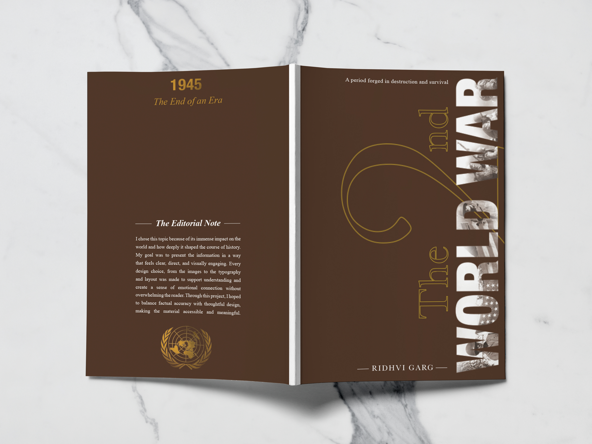
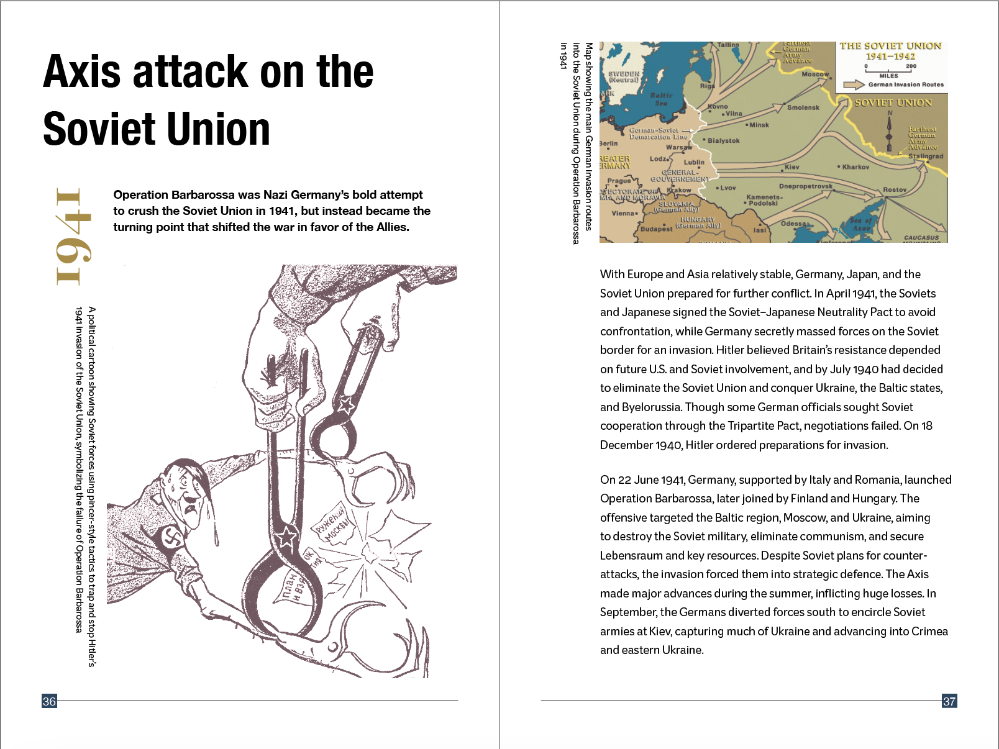
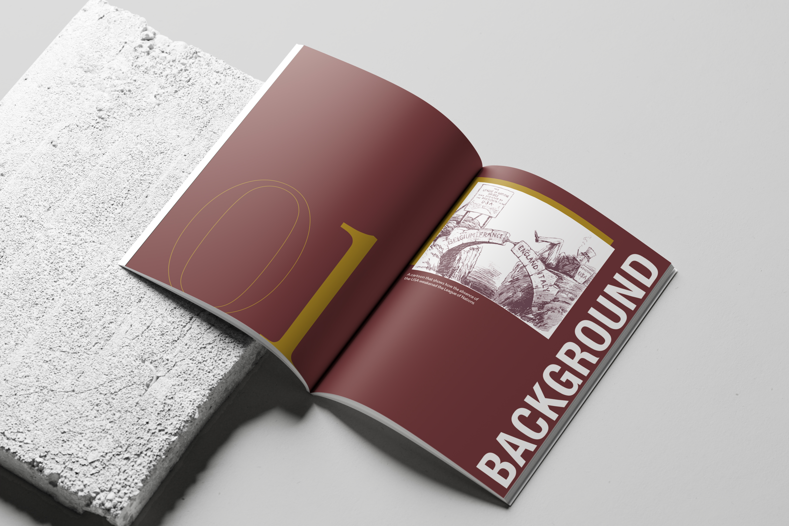
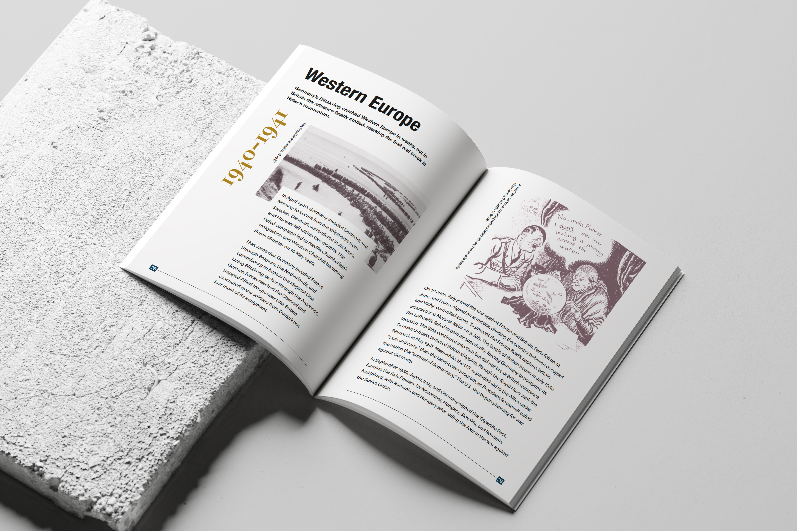
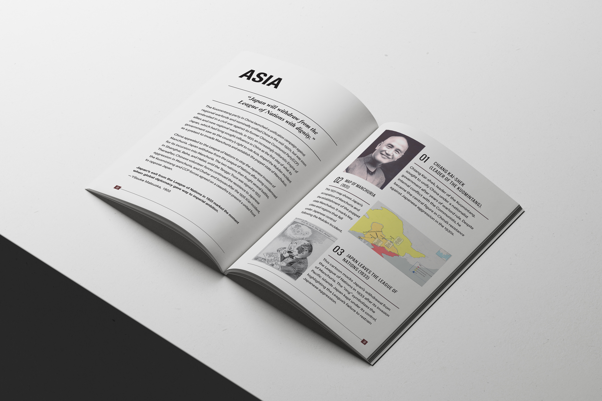
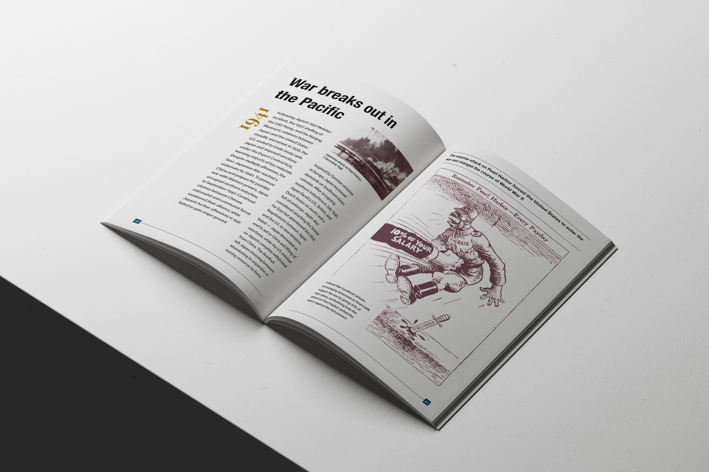
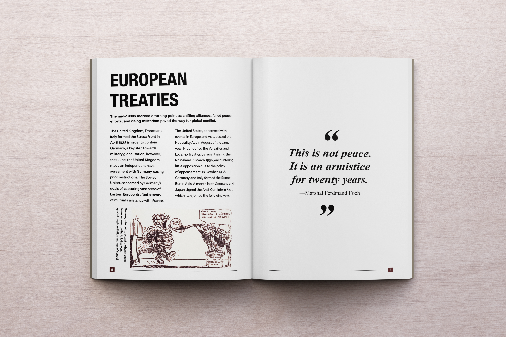
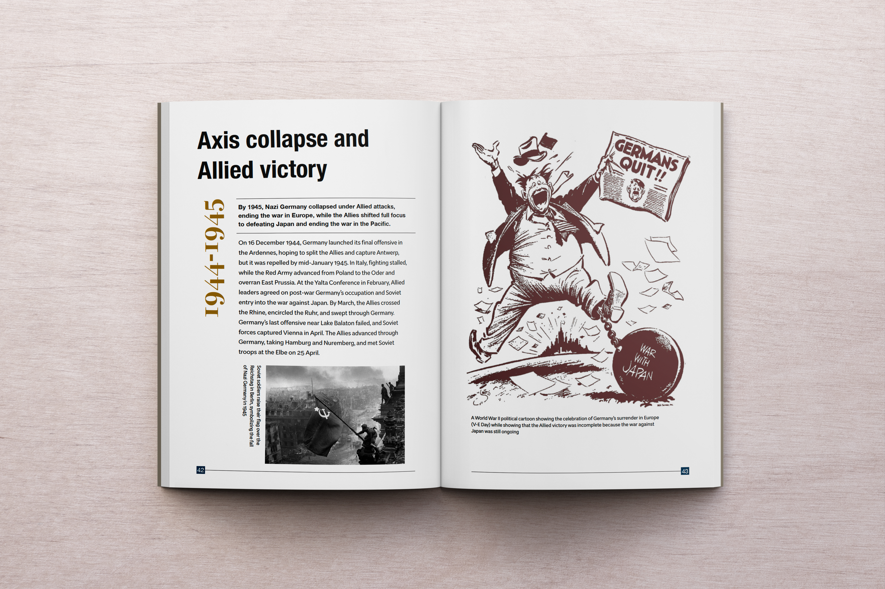

Wikibook
This Wikibook explores the Second World War as both a historical event and a designed moment in global history. Using a chronological structure, archival imagery, maps and political cartoons, it explores how visual communication shaped public understanding. A minimal, structured layout makes complex history feel clear, engaging and visually meaningful.

Cover Design
For the covers, I have used a deep brown tone to reflect the seriousness and weight of the topic. Bold, stacked typography creates impact and urgency, while subtle image textures within the title hint at history without revealing everything. The back cover is quieter and more minimal, leaving space for reflection and a clear end to the narrative.

Typographic Hierarchy
I have designed the typographic hierarchy in a way that gently guides the reader through each spread. Strong headings and bold opening statements introduce the content, followed by a clear body text and smaller captions that support the visuals. Pull quotes create moments of pause, adding emphasis and rhythm to the reading experience.

Use of Color
I have used a limited colour palette and brown overlay to create consistency and a unified tone across the book. The overlay also softens the visuals and helps sustain a serious and reflective mood while allowing different sections to feel connected.


Use of Grid
I have used a consistent grid system to keep information clear and organized, while still experimenting with its structure to avoid repetition. This approach helped me manage text, images and captions systematically, while allowing enough variation across spreads.


Visual Breaks
I have added visual break pages with pull quotes and large imagery to create emphasis and reset the reading rhythm. These moments help avoid monotony, giving the reader space to pause before moving on to the next section.


Initial Drafts
Reflection
This project evolved over nearly a month and a half of constant iteration and refinement. Each spread went through multiple versions as I explored different layouts, pacing and visual structures. I chose to focus on political cartoons as a key element to introduce moments of wit and contrast within an otherwise serious subject. Through this process, the Wikibook became not just a documentation of history, but a carefully designed narrative shaped by experimentation, patience and intention.